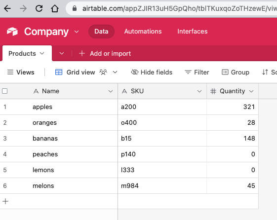

Airtable is a great solution for storing data of all kinds, and many people are using it for different use cases. Let's learn how to push Airtable data to a Google Doc. We'll use a simple Airtable base with a single Products table that has three columns: Name, SKU, and Quantity. We want to push to Google Doc all of the out-of-stock products whose quantity equals zero.
Set up
To get things started, create an Airtable account. Then create a base with a table. Name the columns Name, SKU, and Quantity. Add a few rows so that you have data to work with. My table looks like this:
To pull data out of Airtable, we need to use its API. We need to authorize the API requests with an access token, so let's create one. In Airtable, click on your profile icon, then on "Developer hub." Click the blue "Create token." Enter some name. Under "Scopes," click "Add a scope" and select "data.records: read." Under "Access," click "Add a base," and select "All current and future bases in all current and future workspaces." Click "Create token."
You'll be provided with your access token. Copy and save it in a safe space. Do NOT share this token with anyone you don't trust!
Next, create a new Google Doc. You can add an "Out-of-stock Products" header. Underneath, insert a 1x1 table. We'll use it as the target of our data writes. You can set the table border to white, so that it doesn't look like a table. From the "Extensions" menu, select "Apps Script." We'll create a script that is bound to the Google Doc.
Pull the data
Getting the data out of Airtable is very easy. Here's the basic function to do so:
function updateInventory() {
const airtableApiKey = 'paste_your_access_key_here';
const baseId = 'paste_your_base_ID_here';
const tableId = 'paste_your_table_ID_here';
const options = {
headers: {
Authorization: `Bearer ${airtableApiKey}`
},
muteHttpExceptions: true
};
const url = `https://api.airtable.com/v0/${baseId}/${tableId}`;
const resp = UrlFetchApp.fetch(url, options);
const content = resp.getContentText();
const jsn = JSON.parse(content)
console.log(jsn)
}To use this function, paste your Airtable access token above. You also need to copy and paste the base ID and the table ID. These reside in the Airtable URL. Just go back to Airtable, open the base, and select the IDs from the URL. The base ID is the first one after the domain. The url structure is:
https://airtable.com/baseId/tableId/viewIdIn the function, we create an "options" object to include our Authorization header. We also mute HTTP exceptions so that we can log them. We construct our API URL and use "UrlFetchApp" to fetch the data, passing the URL and the options object. We get the content back from the response, and parse it. Finally we log the response.
If you run the function then you should see a response object that includes a "records" key with all of your data. The values are contained in a "fields" key.
Writing the data
Updating the table inside the Google Doc is super easy:
const products = jsn.records.map(record => record.fields.Name);
const doc = DocumentApp.getActiveDocument();
const body = doc.getBody();
const table = body.getTables()[0];
const cell = table.getCell(0,0);
cell.clear();
cell.setText(products.join('\n'));
doc.saveAndClose();Above, we iterate over the "records" attribute of our "jsn" object, and pull out the "Name" field from each record. We then get the active Google Doc, get its body, its first table, and the first (and only) cell in the table. We clear the cell (in case we execute multiple API calls), join the product names using a line break, and setting them as text in the cell. Finally we save and close the document.
Filter and sort the data
Currently, our code pulls out all the products from Airtable. We want to pull only the items that have zero quantities. We also want to sort the products by name alphabetically. To do that, we need to add query parameters to our API call. We can store the parameters in an object, and then convert the object to an encoded string:
const paramsObj = {
filterByFormula: 'Quantity=0'
'sort[0][field]': 'Name',
'sort[0][direction]': 'asc',
};
const params = Object.entries(paramsObj).map(([k,v])=>
`${encodeURIComponent(k)}=${encodeURIComponent(v)}`).join('&');
const url = `https://api.airtable.com/v0/${baseId}/${tableId}?${params}`;
const resp = UrlFetchApp.fetch(url, options);Above, we create our parameters object. We set up a filtering attribute with the formula to use (Quantity=0). We also include our sorting directive. You can have multiple sorting criteria, so we specify our first criteria ([0]) with the field to sort: Name, and the direction as ascending.
Next, we convert the object to a string by iterating over the keys and values of the object. We convert each entry to an encoded string. Finally, we join all the strings using an ampersand.
Finally, we modify the API URL to include our query parameters.
If you run the function now then your Google Doc should list only items with zero quantities, if there are any.
Handling large datasets
The code so far works great for small datasets. What do you do when your data includes many rows and columns? It's impossible to get all the data back in one API request. Luckily there are (at least) two things we can do to improve things: limit the columns we bring back, and iterate over the results with multiple calls.
Since we save only the Name field in our Google Doc, we don't need to bring back "SKU" and "Quantity." We can limit the fields to bring back in our parameters object:
const paramsObj = {
'fields[0]': 'Name',
filterByFormula: 'Quantity=0'
'sort[0][field]': 'Name',
'sort[0][direction]': 'asc',
};We added a "fields" key with a "Name" value. If we wanted to bring back "SKU" as well then we would add a second attribute: 'fields[1]': 'SKU'. If you log "jsn" now then you'll see only the "Name" field showing up.
By default, Airtable will return upto 100 results. If our data is larger than that then we need to page through the results, using an "offset" attribute that lets Airtable know which page of data to bring back next. We can change our function to include a loop to issue multiple requests as long as the "jsn" response includes the offset. If the offset doesn't exist on the response object then we break out of our loop and update the Google Doc. Here's our updated function:
function updateInventory() {
const airtableApiKey = 'paste_your_access_key_here';
const baseId = 'paste_your_base_ID_here';
const tableId = 'paste_your_table_ID_here';
const options = {
headers: {
Authorization: `Bearer ${airtableApiKey}`
},
muteHttpExceptions: true
};
const paramsObj = {
filterByFormula: 'Quantity=0'
'fields[0]': 'Name',
'sort[0][field]': 'Name',
'sort[0][direction]': 'asc',
offset: '0',
pageSize: '100'
};
const products = [];
do {
const params = Object.entries(paramsObj).map(([k,v])=>
`${encodeURIComponent(k)}=${encodeURIComponent(v)}`).join('&');
const url = `https://api.airtable.com/v0/${baseId}/${tableId}?${params}`;
const resp = UrlFetchApp.fetch(url, options);
const content = resp.getContentText();
const jsn = JSON.parse(content)
if (!jsn.records) {
console.log(jsn);
return;
}
const productNames = jsn.records.map(record => record.fields.Name);
products.push(...productNames);
paramsObj.offset = jsn.offset;
} while (paramsObj.offset)
const doc = DocumentApp.getActiveDocument();
const body = doc.getBody();
const table = doc.getTables()[0];
const cell = table.getCell(0,0);
cell.clear();
cell.setText(products.join('\n'));
doc.saveAndClose();
}For demo purposes, we include an optional "pageSize" query parameter. If you set it up to 1 then you can see how the function issues multiple requests until all the data is sent back.
Happy Airtabling!